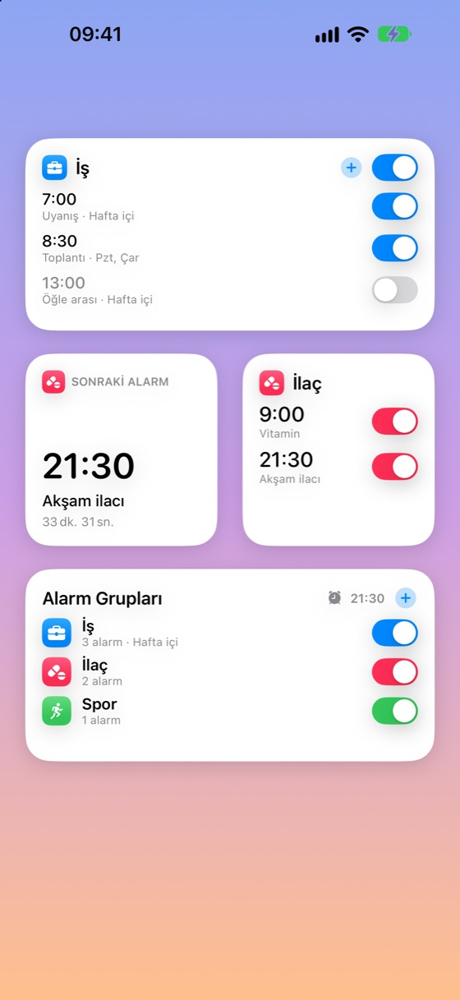
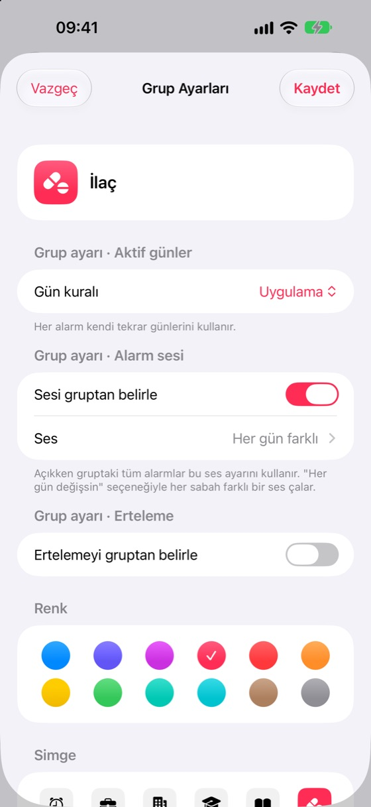
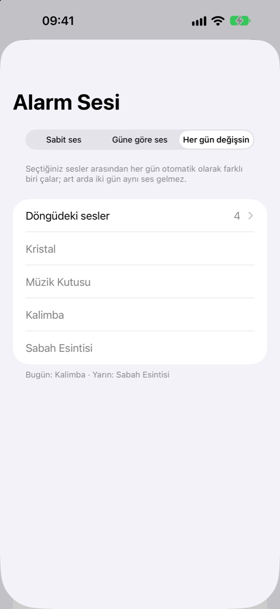
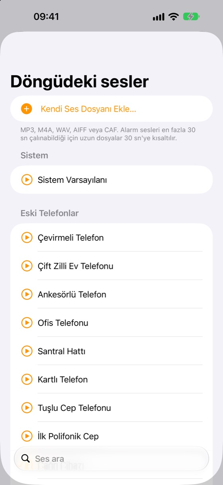
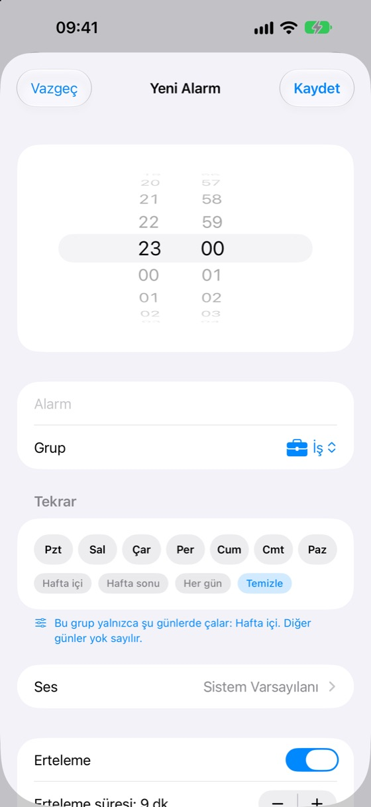
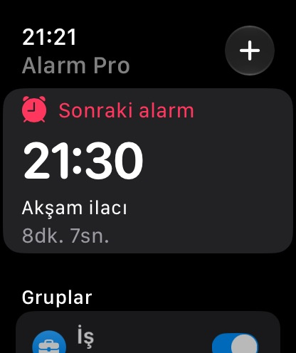
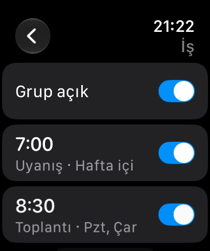

Saat uygulamasının eksik kalan her şeyi
Alarm Pro, iPhone'un yerleşik alarm altyapısını kullanır: alarmlar sessiz modda ve Odak açıkken bile tam ekran çalar.
Açılır gruplar
Gruplar alt alta durur, dokununca açılır. Her grubun ve her alarmın kendi açma/kapama anahtarı vardır.
Grup gün kuralı
Hafta içi grubu hafta sonu hiçbir koşulda çalmaz. Günleri grupta bir kez ayarlayın, tüm alarmlara uygulansın.
Her gün yeni bir ses
Listenizden her sabah farklı bir ses çalsın ya da haftanın her gününe ayrı ses seçin.
66 özgün ses + kendi sesleriniz
Eski telefon zillerinden yumuşak uyanışlara, hepsi Alarm Pro için üretildi. Kendi ses dosyalarınızı da ekleyebilirsiniz.
Widget'lar ve Denetim Merkezi
Grupları ve alarmları doğrudan ana ekrandan açıp kapatın; widget'a dokunarak alarm ekleyin ve düzenleyin.
Apple Watch
Sıradaki alarmı görün, grupları ve alarmları açıp kapatın, bileğinizden alarm ekleyin ve düzenleyin. Komplikasyonlar dahil.
Saat'ten içe aktarma
Mevcut iPhone alarmlarınızı Kestirmeler ile tek seferde aktarın. Aynı alarm iki kez eklenmez.
Erteleme ve Kilit Ekranı
Ertelemeyi alarm ya da grup bazında ayarlayın. Geri sayım Kilit Ekranı'nda ve Dynamic Island'da görünür.
13 dil, açık ve koyu tema
Cihazınızın dilinde açılır, açık ya da koyu görünüme otomatik uyum sağlar.
Reklamsız Premium
Alarm Pro ücretsizdir. Küçük bir aylık abonelikle iPhone ve Mac'te reklamlar kalkar.
Bağışla destek olun
Uygulamayı sevdiyseniz dilediğiniz tutarda tek seferlik bağış yapabilirsiniz.
Yakından bakın
Her ekran cihazınızın diline ve görünümüne uyum sağlar.





Bileğinizde
Apple Watch uygulaması iPhone'unuzla eşzamanlıdır: grupları açıp kapatın, alarmları düzenleyin, sırada ne çalacağını görün.


Ses kategorileri
Tüm sesler Alarm Pro için özel olarak üretildi.